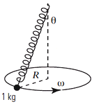
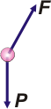
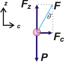

|
NO ME SALEN
PROBLEMAS RESUELTOS DE FÍSICA DEL CBC
(Fuerzas elásticas, dinámica del movimiento circular, péndulo cónico)
|
|

|
| |
| FIS 95 (d5.17) - Se engancha una partícula de 1 kg a un
resorte de masa despreciable de constante elástica
10 N/cm y longitud natural 48 cm. Se hace
girar al cuerpo como un péndulo cónico con una
velocidad angular constante de 60 r.p.m. a) Calcular el alargamiento del resorte.
b) Calcular el ángulo que forma la altura del
cono con la generatriz. |
 |
|
Hay un asunto que tenés que tener en claro antes de empezar: la longitud del resorte sin estirar vale 48 cm, pero ahí donde lo ves, con el cuerpo colgado y girando, está estirado. ¿Correcto? A la longitud sin estirar la llamaremos Lo, y estirado L. |
|
|
|  |
Como todo ejercicio de dinámica... ya sabés por dónde hay que empezar.
Acá está el DCL, describiendo las dos únicas fuerzas que actúan sobre el péndulo cuando se halla en la misma posición que te lo dibujé en el esquemita. La fuerzas son; el peso de la masa, P; y la fuerza con que lo tira el elástico, Fe. |
|
|
|
Hagamos algunas aclaraciones sobre el esquema del péndulo que me parece que son pertinentes y que después vamos a necesitar.
El radio de la circunferencia, R, vale:
R = L sen θ
Por otro lado la velocidad angular, 60 rpm, la vamos a expresar en radianes por segundo para poder operar con ella cuando corresponda.
ω = 60 rpm = 60 . 2π / 60 s
ω = 2π s-1
Bueno, tenemos que escribir las ecuaciones de Newton, pero, como las fuerzas no son co-direccionales, debemos descomponer una de ellas. Lo más prácrico es descomponer la fuerza elástica, F. Acá va el nuevo DCL. |
|
|
|  |
Recordás que siempre que enfrentás un MCU a uno de los ejes lo llamás c (por centrípeto), en lugar de x, ¿no? Es cierto que se trata de un eje que va cambiando con el tiempo. Pero no te olvides que la dinámica son sólo instantáneas del universo. Fijate que θ aparece nuevamente en la descomposición de la fuerza elástica. Y eso permite establecer que:
Fz = F. cos θ
Fc = F. sen θ |
|
|
|
Ahora sí, vamos a Newton. En el eje vertical tenemos que la aceleración es cero (la circunferencia de la trayectoria no cambia de altura, está quieta).
ΣFz = 0 → Fz — P = 0 → Fz = m . g
ΣFc = m ac → Fc = m ac → Fc = m ω² R
A estas ecuaciones debemos agregar la ley de Hooke:
F = k ΔL = k (L − Lo)
Pasemos el limpio las tres ecuaciones reemplazando las componentes de la fuerza elástica y reemplazando R. |
|
 |
| |
F . cos θ = m . g |
[1] |
| |
F . sen θ = m ω² L sen θ |
[2] |
| |
F = k L − k Lo |
[3] |
|
|
|
Si contas bien vas a ver que tenés 3 ecuaciones con 3 incógnitas. De modo que acá termina la física y comienza el álgebra. No dudes de que esto tiene solución.
En la [2] podés cancelar sen θ, y la igualás con la [3].
k L − k Lo = m ω² L
De acá despejamos L y la calculamos.
L = k Lo / (k − m ω²)
L = 1.000 N/m . 0,48 m/ (1.000 N/m − 1 kg 4π² s-2)
L = 480 N/ 960 N/m
L = 0,50 m
Conociendo el largo del resorte estirado podemos conocer cuánto se alarrgó:
ΔL = L − Lo
ΔL = 0,50 m − 0,48 m
|
|
|
|
|
|
Con este valor vamos a la ecuación [3] y calculamos la fuerza elástica:
F = k ΔL
F = 1.000 N/m . 0,02 m
F = 20 N
Con este resultado vamos a la [1] y calculamos θ.
cos θ = m . g / F
cos θ = 1 kg . 10 m/s² / 20 N
cos θ = 0,5
|
|
|
|
|
|
| |
|
|
|
|
 |
| DESAFIO: ¿Gereratriz? ¿Con qué se come eso? |
|
| Algunos derechos, zurdos y ambidiestros reservados.
Se permite su reproducción citando la fuente. Última actualización abr-16. Buenos Aires, Argentina. |
|
|
|